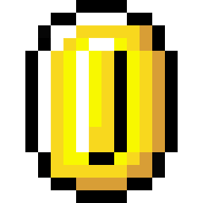

CURIOSIDADES
Linguagens que preciso aprender
java
PHP
Javascript
TypeScript
As que mais quero aprender
Phyton
Java
PHP
Kotlin
Jogos e Consoles favoritos
PLAYSTATION2
Dragon ball Z Budokai Tenkaichi 3
God of war 2
God hand
XBOX 360
Minecraft
Metal gear rising
Naruto storm Revolution
PLAYSTATION 4
God of War 4
Days Gone
Final Fantasy 7 Remake
Lista de Definições
HTML
Linguagem de marcação para criação de conteúdo de um site.
CSS
Linguagem de marcação para a criação do design de um site.
JavaScript
Linguagem de programação para a criação de interatividade de um site.
voltar para a tela inicial.
